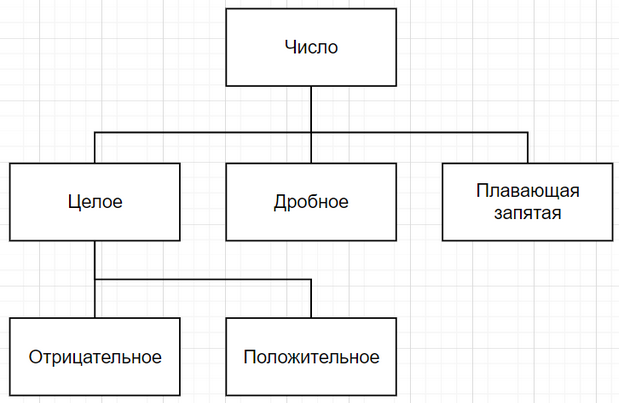
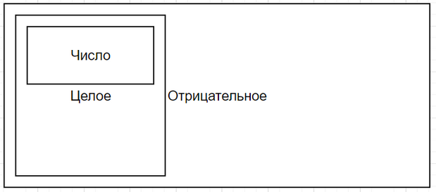

Прежде чем обсуждать феномен полиморфизма следует рассмотреть его противоположность, с которой вы уже хорошо знакомы, но которой до сих пор не придавали особого значения. Примеры реализации функций выше включали в себя только такие функции, которые работают с типами данных, известными заранее. Эти типы прописываются в списке параметров функции, а также указываются в качестве возвращаемого типа. Эта уникальность типов, которая устанавливается для аргументов и значений функций, обуславливает их мономорфность1. На этом контрасте легко понять, что такое полиморфность – это свойство переменных и значений принимать более одного типа. Такие примеры выше тоже были, но они не выделялись специально, поэтому не удивительно, если вы их не заметили. Попробуйте присмотреться, например, к использованию конструкторов:
Очевидно, что одна и та же функция (конструктор rational) принимает разные типы данных в качестве аргументов: то пару int, то объект rational, а то и строку char*. Вы уже знаете, что это на самом деле достигается не полиморфными типами данных, а перегрузкой – наличием разных функций с одинаковым названием, но с точки зрения программы это тоже своего рода полиморфизм, а точнее один из примеров “ad hoc”2 полиморфизма.
Другой пример “ad hoc” полиморфизма – приведение типов – вы тоже видели, не подозревая, что это называют таким термином. Если вам в голову не приходит конкретный пример, внимательно посмотрите на следующую строку:
rational b(2.5, 3.8);
Подумайте как будет выглядеть конечный объект b. Очевидно, что оба аргумента являются значениями типа double, то есть не представлены целыми числами, как того требует интерфейс класса rational. Тем не менее, объект будет создан без ошибок, и если вы предположили, что его значением будет число
, вы угадали. Так как при вызове подходящего конструктора вариант с дробными числами найден не будет, компилятор попробует выбрать ближайший из возможных3, согласно правилам системы типов языка С++. Язык позволяет переводить числовые данные из целых в дробные и обратно, при условии, что часть данных будет утеряна, и программист это осознает. Благодаря этому компилятор знает, что возможна инициализация объекта rational дробными числами с помощью конструктора, который содержит целые числа в списке аргументов, так как дробные числа легко могут быть приведены к целым в момент инициализации аргументов.
Это неявное приведение типов является примером полиморфизма, так как конструктор может быть вызван типом данных, который изначально не предусматривался. Если в случае с перегрузкой функций вид полиморфизма выбирал сам программист, то при приведении типов это делается системой типов данных в языке. Здесь перед вами встает вопрос: стоит такое поведение допускать или нет.
Упражнения
1
В одной из предыдущих частей уже упоминался способ ограничения типов данных, которыми можно инициализировать объекты rational. Учитывая пример неявного ad hoc полиморфизма с приведением типов, который был показан выше, можно было бы изменить дизайн класса rational и сделать невозможным конструирование объектов с помощью дробных чисел.
2
Возвращаясь в последний раз к конструктору переноса осталось сделать функцию по обмену значениями двух рациональных чисел. Наивная реализация могла бы выглядеть так.
void swap(rational &a, rational &b) {
rational tmp = a;
a = b;
b = tmp;
}
Но вы уже знаете о существовании функции std::move, и у вас уже реализован конструктор переноса, поэтому нет смысла копировать значения. Отдельно стоит подчеркнуть, что значимость всех этих манипуляций с типами значений не сразу очевидна на таких несложных типах данных, как rational. Все таки, он сам состоит их двух примитивных типов. Если бы он в себя включал указатели, конструктор переноса заиграл бы новыми красками. Попробуйте смоделировать эту ситуацию и подумайте, как конструктор переноса способствует более эффективной работе программы в таком случае.
Наследование
Перед тем, как рассматривать другой тип полиморфизма на конкретных примерах, необходимо чуть более подробно поговорить о некоторых особенностях системы типов в С++. Эти особенности – подтипы и шаблоны – вводят в оборот новые инструменты, которые позволяют использовать полиморфные типы данных. А именно, полиморфные типы данных позволяют создавать универсально полиморфные функции – такие функции, которые могут работать с бесконечным количеством уникальных типов. Очевидно, что такого эффекта нельзя добиться перегрузкой или приведением типов, потому что физически невозможно создать бесконечно много перегруженных версий той или иной функции, так же физически невозможно описать бесконечно большой список правил приведения того или иного типа в другой. Здесь на помощь приходит полиморфизм подтипов.
Основной механизм для достижения такой полиморфности – наследование – в разных языках реализуется по-разному. Суть наследования состоит в расширении свойств и методов отдельно взятого типа данных за счет создания нового, “дочернего” типа данных, базирующегося на существующем типе. То есть, новый класс перенимает все поля другого класса без необходимости их копировать руками. Компилятор рассматривает новый тип как принадлежащий к иерархии базового типа, таким образом возникает ситуация, в которой любой объект базового типа можно легко заменить объектом нового подтипа без каких-либо ошибок. Это работает благодаря тому, что все поля базового типа в новом подтипе тоже присутствуют, соответственно те инструкции программы, которые обращаются к таким полям, найдут их и в новом подтипе гарантированно.
По этой причине иерархии наследования принято изображать как древовидную структуру, в которой базовый класс играет роль корня дерева. Например, на иллюстрации ниже показана иерархия чисел, которая взята как фрагмент системы типов языка Smalltalk.

Фрагмент иерархии классов в языке Smalltalk.
Как говорилось чуть выше, основное предназначение классов, которые составляют систему типов, представленную на диаграмме – управлять поведением своих объектов. Тогда становится очевидным, что целое число и дробное число ведут себя примерно одинаково, потому что им присущи одни и те же операции (взятие по модулю, сложение, вычитание и т.д.) – следовательно, они оба принадлежат классу чисел. Отрицательное целое число ведет себя схожим образом с любым другим целым числом, а если продолжить аналогию – с любым другим числом, поэтому отрицательные целые числа являются подтипом целых чисел, которые в свою очередь являются подтипом чисел. При этом поведение подтипа становится чуть более специфичным по сравнению со своим базовым типом (“супер-типом”). Например, всем числам присущи операции сложения и вычитания, но только дробные числа имеют числитель и знаменатель и т.д.
Если рассматривать наследование как абстрактный механизм классификации, он выглядит понятно и местами элегантно. Реализация наследования – совсем другое дело. Например, в Smalltalk наследование реализуется через инициализирование объектов. Каждый класс в системе типов – это объект своего базового класса. Пользуясь иллюстрацией выше, “целое число” – это одновременно класс для “положительного числа” и объект класса “число”. Отсюда можно сделать вывод, что все классы – это объекты других классов, за исключением корня иерархии классов, потому что корень ничего не наследует и является чистым “абстрактным” классом. Благодаря этому “классы” можно изменять в ходе работы программы (дополнять новыми методами или изменять существующие), так как в конечном итоге они ведут себя как переменные.
В C++ используется другой подход. Так как понятие “класса” тесно связано со структурами данных, делать подтипы в виде объектов своего базового класса не так удобно. Разработчики посчитали более рациональным обратный подход: сделать базовый класс объектом внутри своего дочернего класса. По аналогии с иллюстрацией выше эта иерархия выглядит, как показано на рисунке ниже.

Иллюстрация иерархии наследования в языке С++.
На такой диаграмме легче визуализировать принцип расширения одного класса другим, так как подкласс включает в себя объект своего базового класса целиком. В коде это выглядит следующим образом.
На такой диаграмме легче визуализировать принцип расширения одного класса другим, так как подкласс включает в себя объект своего базового класса целиком. В коде это выглядит следующим образом.
class number { … };
class integer : number { … };
class positive : integer { … };
Двоеточие после названия класса ожидает справа от себя имя базового класса. Это является сигналом для компилятора: при инициализации объекта типа positive будет инициализирован и объект типа integer, а следовательно – и объект number. Все они будут включены один в другой по принципу матрешки (этот прием также называется композицией).
За двоеточием может следовать указание типа наследования, который выбирается из трех возможных: открытое, защищенное или закрытое наследование.
class number { … };
class integer : public number { … };
class positive : public integer { … };
Тип наследования потенциально изменяет доступ к полям наследуемого класса. Открытый тип – public в примере выше – не имеет эффекта, а поэтому рекомендуется к использованию в большинстве случаев [Pomeranz]. Если тип наследования не указать явно, по умолчанию устанавливается закрытое наследование. Это означает, что все модификаторы доступа базового класса изменяются на private в дочернем классе, из чего следует, что открытые поля базового класса будут недоступны объекту дочернего класса (но будут доступны внутри самого дочернего класса).
Самый верхний тип (number) играет роль абстрактного (подробней об этом говорится в следующей главе), что не подразумевает создания объектов такого типа в своих программах явно. Имея такую структуру наследования, фрагмент кода ниже должен быть “легальным”.
positive i = -1;
assert(i == 1);
Инициализация позитивного целого числа отрицательным числом должна либо конвертировать значение в положительное, либо принудительно останавливать работу программы. В примере выше предполагается, что программа должна продолжить работу. Это значит, что конструктор класса positive должен принимать любые целые числа и сохранять абсолютное значение их целой части.
Этого эффекта можно добиться как минимум двумя способами. Так как при наследовании дочерний класс при инициализации содержит в себе объект родительского класса, можно хранить значение для типа positive в его внутреннем объекте типа integer. Тогда задача конструкторов класса positive заключается в проверке передаваемых им значений и приведении их к нужной форме с последующим хранением в своем объекте типа integer, используя поля с данными этого объекта для хранения своих значений.
Второй способ предполагает игнорирование полей с данными родительского объекта и создание своих собственных атрибутов соответствующего типа (например, unsigned int для класса positive). Это подразумевает дублирование информации, так как наличие внутренних полей в родительских объектах никак не используется в дочернем классе. Чтобы визуализировать всю эту иерархию, посмотрите на следующий пример.
class number {
// абстрактный класс без полей с данными
};
class integer {
public:
integer(int a): x(a) {}
private:
number n; // явное включение родительского класса для доступа к его операциям
int x{0};
};
class positive {
public:
positive(int a): i(abs(a)) {}
private:
integer i; // явное включение родительского класса для доступа к его данным и операциям
};
Здесь вместо неявного включения родительских объектов через наследование используется явное – композиция. С точки зрения класса positive в данном случае принципиально ничего не меняется. Внимательным глазом можно заметить, что этот подход немного пересекается с тем, как наследование устроено в Smalltalk, классы тоже инициализируются как объекты (и это естественно, так как и С++, и Smalltalk разрабатывались с оглядкой на другой язык – Simula-674).
Упражнения
В примере с композицией стоит обратить внимание на использование конструкторов. Так, при создании объекта типа integer вызовется не только соответствующий конструктор класса, но и конструкторы всех атрибутов этого класса, которые не представлены примитивными типами данных. В этом случае был бы вызван синтезированный конструктор по умолчанию класса number. По такой же цепочке происходят вызовы конструкторов при инициализации объекта positive. Если присмотреться, можно заметить, что в классе positive есть явный вызов конструктора integer(int). Похожим образом эти конструкторы будут вызваны и в случае с наследованием.
Возвращаясь к строке positive i = -1, возможно, не каждому из прочитавших эту часть было понятно по какой цепи выполнялся код, который привел к присваиванию значения переменной, которая инициализировалась числом . Чтобы явно увидеть связь между всеми операциями, вызванными инструкцией positive i = -1, следует дополнить все определения классов number, integer и positive. Затем, используя дебаггер или текстовую трассировку5, подтвердить ход и конкретное место исполнения инструкций в программе. Для этого следует использовать конструкторы и их переопределение. Сделать это вам предлагается с использованием наследования, чтобы убедиться, что порядок инициализации будет очень схож с тем, как это происходит для случая с композицией.
Напоследок, стоит отметить, что сейчас читателю может быть непонятно, зачем нужно наследование, которое скрывает определенные операции, если практически такого же эффекта можно добиться применением композиции. Ответ на этот вопрос будет дан в одной из следующих глав.
Сноски
1От греческого “моно” – одна, “морфи” – форма; языки, основанные на идее функций и процедур, а также их операндов, которые имеют уникальный тип, принято называть мономорфными, так как каждое значение и каждую переменную можно интерпретировать единственным типом данных [Cardelli].
2Ad hoc – решение, специально придуманное под конкретную задачу, буквально “для этого” (лат.).
3Это поведение можно запретить с помощью ключевого слова explicit в объявлении конструктора.
5Code tracing – техника визуального подтверждения значения одной или нескольких переменных на каждом этапе работы программы, как правило выполняемая с помощью вывода значений в одно из “окон” программы, либо – вручную на бумаге.